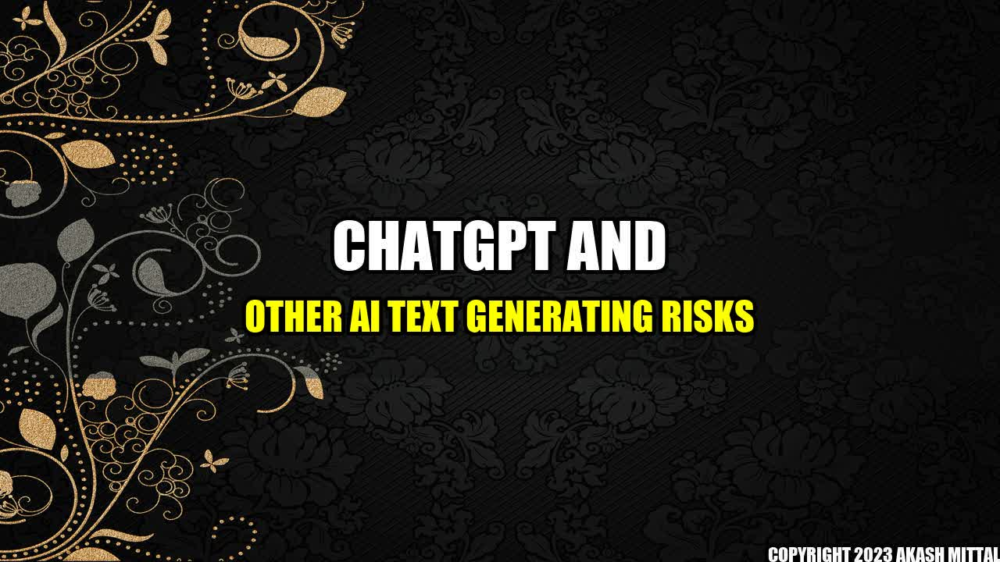

How ChatGPT and Other AI Text Generating Tools Pose Risks to Society
In recent years, artificial intelligence (AI) has made significant strides in the field of language generation with tools like ChatGPT making headlines across the globe. However, while AI text generators may seem like a fun and harmless tool, they possess risks that can potentially negatively impact society as a whole.
Take the case of a major news portal who started using an AI text generating tool to generate news content for their website. While the tool worked well initially, it soon started producing fake news stories that spread virally across social media. This caused a widespread panic and put people's lives in danger in some cities.
Real life examples of AI text generation risks are plentiful. A major insurance company had to deal with a scandal when their AI text generation system produced discriminatory language while generating company-wide policies. In another instance, a politically motivated campaign used AI text generators to spread disinformation about another candidate.
The companies involved in these incidents include widely recognized firms like the news portal The Guardian, the insurance firm Allianz, and the political campaign firm Cambridge Analytica. These incidents demonstrate the potential negative impacts AI text generators can have on society.
The Risks Associated with AI Text Generators
- Spread of Fake News: As demonstrated by the incident we described above, AI text generators that produce fake news can spread rapidly and cause widespread chaos.
- Discrimination and Bias: AI text generators can be programmed to generate language that is discriminatory or biased. For instance, in the case of Allianz, the AI-generated policies were found to be discriminatory against women and minorities.
- Privacy Concerns: AI text generators need access to large amounts of data to work effectively. This can raise privacy concerns if the data used is sensitive and personal.
In conclusion, while AI text generators like ChatGPT may seem like a fun and harmless tool, they can potentially cause a lot of harm. The incidents we described above demonstrate the risks they can pose to society. As AI language generation technology continues to advance, it is important for us to keep a close eye on these risks and work to mitigate them.
References and Further Readings
- GPT-2: The AI That Can Write Essays Is Already Dangerously Good by The Guardian
- Chatbots and the Spread of Dangerous Misinformation by MIT Technology Review
- AI-Generated Text Is the Scariest Deepfake of All by Wired
Hashtags
- #AItextgeneration
- #ChatGPT
- #AIlanguagedangers
- #AIrisks
Akash Mittal Tech Article
Share on Twitter Share on LinkedIn